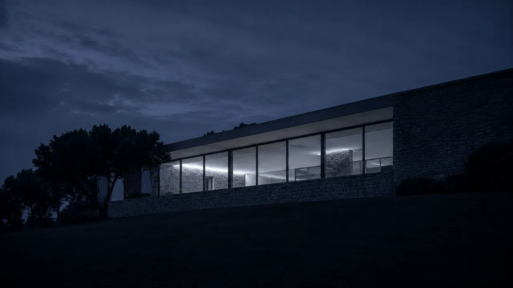

Fiches biens avec photos & filtres
Chaque bien présenté avec photos haute qualité, surface, prix, localisation et carte. Un acheteur qui trouve sa future maison sur votre site vous appelle — pas le portail concurrent.

Vos acheteurs et vendeurs cherchent une agence sur Google avant de signer. Sans site professionnel, ils contactent votre concurrent. Je crée des sites immobiliers sur mesure qui génèrent des mandats, pas juste des visites.
Un propriétaire qui cherche une agence ne rappelle pas. Il signe avec celle qui lui inspire le plus confiance en ligne.
Sans site visible sur "agence immobilière + votre ville", vous êtes absent de cette décision. Chaque mandat non obtenu, c'est une commission perdue — et un client qui ne reviendra pas. Dans le Golfe de Saint-Tropez, où les commissions sont parmi les plus élevées de France, l'enjeu est immense.
Un propriétaire qui hésite entre deux agences à Saint-Tropez, Sainte-Maxime ou Grimaud compare les sites. Un site amateur = un mandat perdu. Un site premium = un carnet de mandats plein.
Recevoir mon devis gratuitPas un template générique — un outil pensé pour votre agence, votre secteur et votre clientèle dans le Var.
Chaque bien présenté avec photos haute qualité, surface, prix, localisation et carte. Un acheteur qui trouve sa future maison sur votre site vous appelle — pas le portail concurrent.
Filtrage instantané des biens par type, prix, surface, localisation — sans rechargement de page. L'acheteur trouve en 30 secondes ce qu'il cherche.
H1 géolocalisé, Schema.org LocalBusiness, Google Business Profile. Vous apparaissez avant les portails sur "agence immobilière Saint-Tropez", "villa à vendre Sainte-Maxime".
Dans le Golfe de Saint-Tropez, vos acheteurs viennent du monde entier. Un site en 3 langues capte la clientèle britannique, allemande et italienne avant vos concurrents.
Formulaire d'estimation en ligne, formulaire de contact par bien, alerte nouveau bien. Chaque visiteur peut devenir un lead qualifié — vendeur ou acheteur.
Design élégant, galerie pleine page, avis clients mis en avant. Un propriétaire qui vous fait confiance en ligne vous confie son mandat en présentiel.
Chaque marché immobilier du Var a ses spécificités. J'ai créé des pages dédiées pour les trois marchés de prestige du Golfe — chacune optimisée pour les requêtes locales exactes de vos clients.
Villas d'exception, clientèle internationale, galerie premium multilingue FR/EN/DE. Le marché le plus prestigieux du Var — votre site doit être à la hauteur.
Appartements vue mer, villas et résidences secondaires. Clientèle internationale face à Saint-Tropez. SEO "agence immobilière Sainte-Maxime" dominant.
Port Grimaud, village provençal, clientèle internationale. Immobilier de caractère entre prestige et authenticité — un positionnement unique dans le Var.
Un mandat ne se gagne pas sur le prix. Il se gagne sur la confiance.
Sud Web Project — Immobilier Var 83Azur Villa Prestige — site multilingue FR/EN/DE/IT pour l'immobilier de luxe du Golfe de Saint-Tropez. Galerie immersive, formulaires leads qualifiés, SEO local optimisé pour capter acheteurs internationaux qui comparent les deux rives.
Performances optimisées desktop et mobile. Filtres de recherche par type de bien, prix et localisation. Fiches villas avec photos haute qualité et vidéo. Le niveau de qualité que je crée pour les agences immobilières du Var.
Immobilier de prestige · Golfe de Saint-Tropez · Var 83
Je connais les spécificités de l'immobilier de prestige du Golfe : Pampelonne, Port Grimaud, les villas des Parcs. Votre site est optimisé pour les vraies requêtes de vos clients.
Britanniques, Allemands, Italiens, Belges — les acheteurs du Golfe ne cherchent pas en français. Un site multilingue vous donne un avantage décisif sur vos concurrents.
Zéro WordPress, code à la main. Chargement rapide sur mobile — vos clients cherchent depuis leur téléphone. Un site lent = un mandat perdu.
H1 géolocalisé, Schema.org, Google Business Profile. Vous apparaissez avant les portails immobiliers et vos concurrents locaux en 4 à 8 semaines.
Code, contenu, domaine — tout vous appartient. Pas de plateforme propriétaire. Maintenance optionnelle à partir de 60 €/mois, sans engagement.
Pas d'agence généraliste. Vous parlez directement avec moi. Devis sous 24h, suivi personnalisé, disponible après la mise en ligne.
Vous vendez des biens que l'on visite deux fois. Votre site, on le visite avant.
Sud Web Project — Immobilier Var 83Pas de frais cachés. Un devis avant de commencer. Vous restez propriétaire à 100%.
L'hébergement et le nom de domaine sont à votre charge. Vous restez propriétaire à 100% de votre site.
Votre agence est dans l'une de ces villes ? Chaque page ville est optimisée pour les requêtes locales spécifiques à ce marché.
Votre site d'agence existe mais est lent, vieilli ou mal référencé ? Je le refonds entièrement — nouveau code, nouveau design, nouvelles performances. Audit gratuit 24h.
Voir la refonteVotre site d'agence doit être disponible 24h/7j. Forfaits maintenance à partir de 60 €/mois — sécurité, sauvegardes, modifications, monitoring. Sans engagement.
Voir la maintenanceLe tarif ne dépend pas simplement du nombre de pages. Chaque projet est différent : le prix dépend du niveau de personnalisation, des objectifs, des fonctionnalités et de l'accompagnement souhaité. Mes projets commencent à 850 € avec l'offre Essentiel. L'offre Premium commence à 1 500 € — fiches biens, listings filtrables et SEO local. Les projets nécessitant une expérience entièrement personnalisée font l'objet d'un devis sur mesure avec l'offre Ultra. Devis gratuit sous 24h.
Oui. Un propriétaire qui hésite entre deux agences compare les sites avant d'appeler. Un site professionnel, rapide et visible sur Google vous place devant vos concurrents dès la première impression — et déclenche le contact qui mène au mandat.
Oui. H1 géolocalisé, Schema.org LocalBusiness, Google Business Profile optimisé. Vous apparaissez avant les portails et vos concurrents sur les requêtes locales — résultats visibles en 4 à 8 semaines.
Oui. Je suis spécialisé dans l'immobilier de prestige du Golfe. Galerie premium pleine page, multilingue FR/EN/DE/IT, formulaires leads qualifiés. Voir la page dédiée : agence immo Saint-Tropez.
Site Premium en 2 à 3 semaines. Site Ultra multilingue en 3 à 5 semaines. Délai garanti dans le devis.
Développeur web spécialisé immobilier dans le Var, je crée des sites qui génèrent des mandats et des acheteurs. Devis gratuit sous 24h, maquette avant de commencer.
Création site internet agence immobilière Var · Site web immobilier Var 83 · Agence immo Saint-Tropez site · Sainte-Maxime immobilier web · Grimaud agence immo